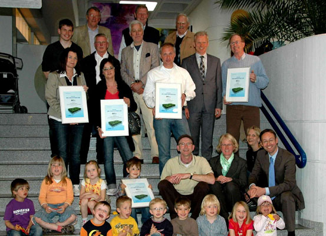

Website durchsuchen:
Umweltpreis 2009
Klimaschutzpreis der RWE 2009 für gute VorbilderMit guten Ideen für eine saubere Umwelt
Den Klimaschutzpreis 2009 der RWE Westfalen-Weser-Ems AG teilen sich fünf Preisträger, die mit verschiedenen Projekten umweltfreundlich gehandelt haben. Dazu zählen drei Kindertagesstätten des DRK Familienzentrums, die Tischlerei Leskovsek und Heinz Schulte von der KAB St. Aegidius. Bürgermeister Theo Mettenborg und Manfred Rickhoff von der RWE überreichten die Preise und lobten das überdurchschnittliche Engagement der Preisträger. Die DRK-Kindertagesstätten Abenteuerland, Budenzauber und Klawitter bekamen den Preis für ihre Aktion „Mit dem Rad zur Kita“. Die Tischlerei Leskovsek wurde mit dem Klimaschutzpreis ausgezeichnet, weil sie eine innovative Schallschutz- und Wärmedämmplatte aus nachwachsenden Rohstoffen verarbeitet, welche europa¬weit in der Türenindustrie eingesetzt wird. Hans-Martin Leskovsek hat diese spezielle Riefa-Platte als ein Nischenprodukt für den Innenausbau und individuelle Lösungen entdeckt. Für dieses eher kleine Segment der Anwendung übernimmt Herr Leskovsek für die Herstellerfirma Delker & Peitz aus Rietberg die Vermarktung und Kontaktaufnahme mit Tischlern. Damit hilft die Tischlerei Leskovsek, einen Baustoff aus nachwachsenden Rohstoffen im Privatbereich bei Trennwänden, Schiebetürsystemen und Raumteilern einzusetzen. Heinz Schulte von der KAB St. Aegidius hat über 200 Vogelnistkästen und Futter¬häuschen gebaut. Schulte hat viel Freizeit in den Bau der Objekte gesteckt und viele davon an Kindergärten und Schulen verschenkt. Seit 2003 lobt die Stadt den Klimaschutzpreis aus. Die RWE stellt dafür jeweils 2.500 Euro zur Verfügung. Diese Summe wird unter den Preisträgern aufgeteilt.
